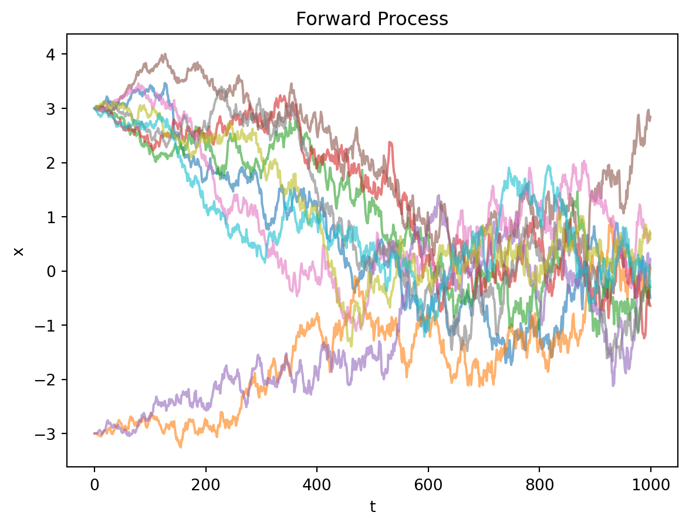
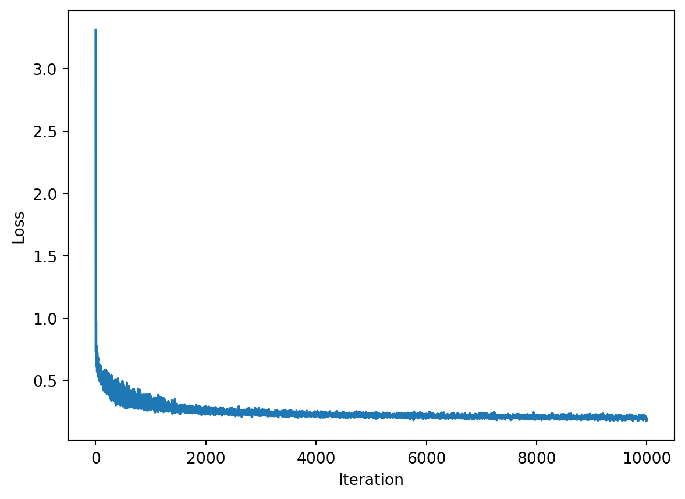
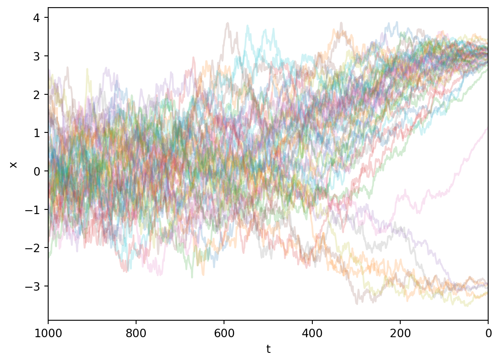
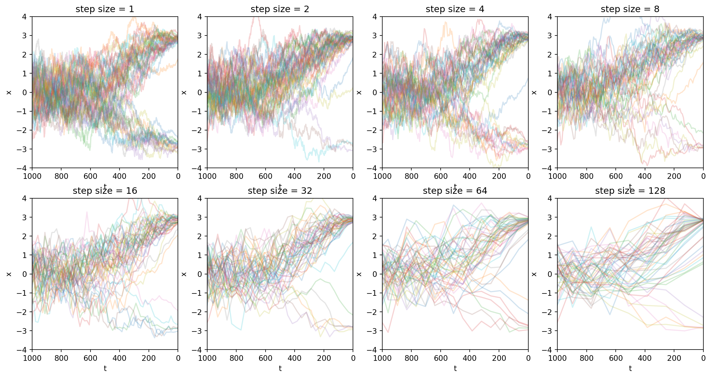
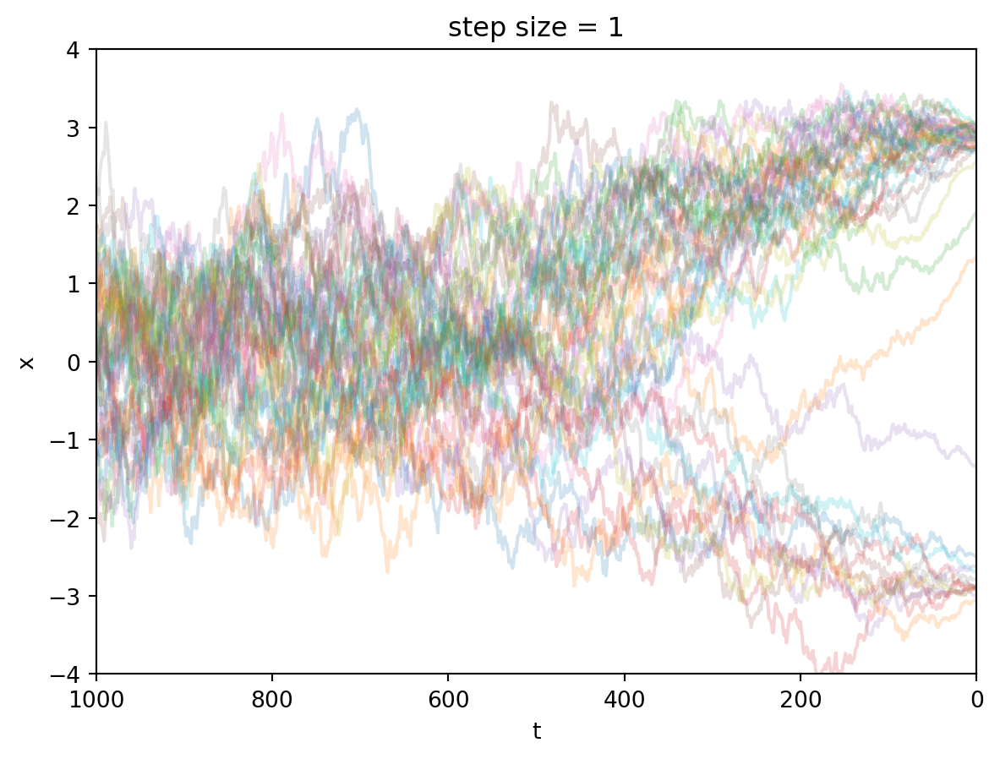
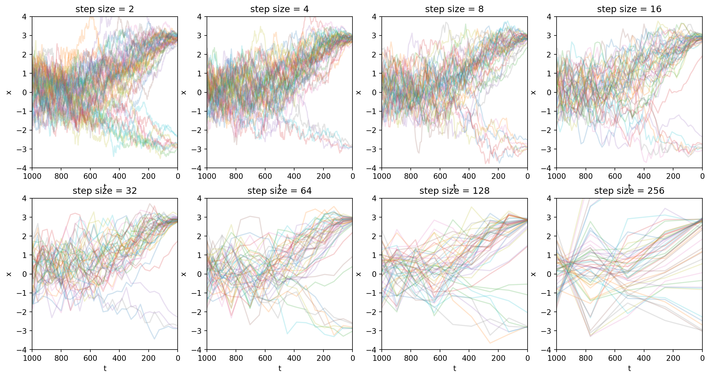
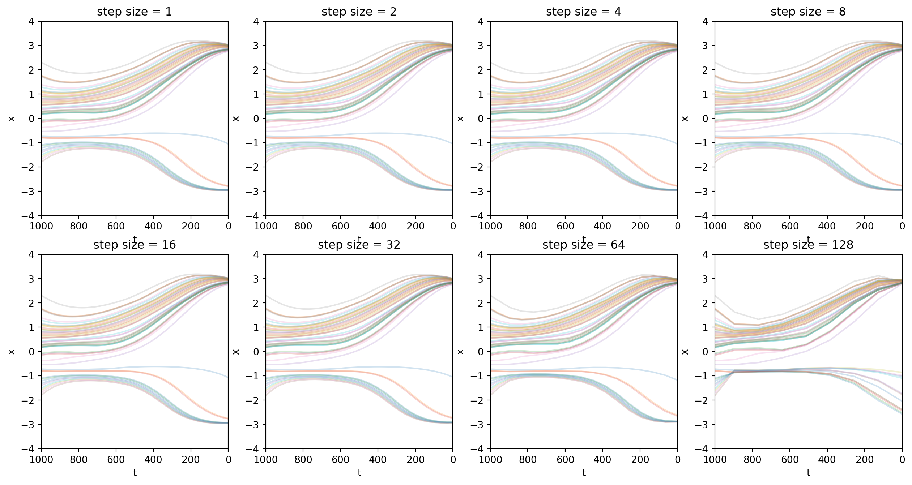
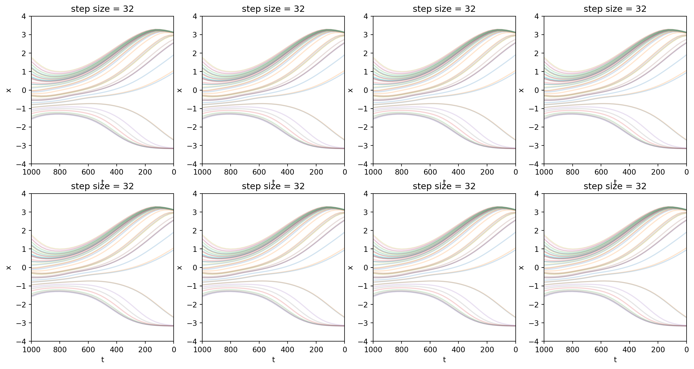

\[ \def \vec#1{{\boldsymbol{#1}}} \def \mat#1{{\mathbf{#1}}} \def \argmax#1{\underset{#1}{\operatorname{argmax}}} \def \argmin#1{\underset{#1}{\operatorname{argmin}}} \]
<script>
MathJax = {
tex: {
tags: 'ams' // should be 'ams', 'none', or 'all'
}
};
</script>\[ \def \vx{{\vec x}} \def \vy{{\vec y}} \def \vtheta{{\vec \theta}} \def \vmu{{\vec \mu}} \def \vsigma{{\vec \sigma}} \def \vepsilon{{\vec \epsilon}} \def \vtau{{\vec \tau}} \def \mI{{\mat I}} \def \mZero{{\mat 0}} \def \mSigma{{\mat \Sigma}} \def \E{{\mathbb E}} \def \N{{\mathcal N}} \def \KL{{D_\text{KL}}} \]
前言
想写篇文章回顾两篇重要工作。一个是DDPM[1]，另一个是DDIM[2].
DDPM[1]展现了扩散模型的强大生成能力，图像质量可与当时主流GAN媲美。它逐步将图像转化为噪声，再训练神经网络学习逆向去噪过程。
DDPM原本需要上千步迭代生成图像，效率低。后续提出的DDIM[2]证明了推理步数可以压缩，提升了实用性。
本文会梳理从DDPM到DDIM的关键推导过程，统一两篇文章的数学符号，让推理过程更加清晰容易理解。
讲故事的顺序是：
- 先介绍样本的前向过程，说明样本是如何扩散变成噪声的。
- 然后介绍反向过程，说明模型是如何去噪的。
- 接著说明根据反向过程，如何推导出扩散模型的优化目标。
- 最后，演示如何用代码训练出一个去噪模型，并且展示如何用这个模型采样。
我会对DDPM和DDIM分别重复上面这个流程。
DDPM
首先看一下DDPM。设初始图像为\(\vx_0\)，扩散模型会在每一步\(t=1,2,3,4,\dots,T\)添加噪声，将\(\vx_{t-1}\)变成\(\vx_t\)，最终得到\(\vx_T\). 这个逐步加噪声的过程叫作前向过程。
根据这个定义，前向过程是马尔科夫过程，即\(q(\vx_t|\vx_0, \vx_1, \dots, \vx_{t-1}) = q(\vx_t|\vx_{t-1})\).
在本文中，我会用Python代码做一些简单的演示和实验。下面的代码将T设为1000.
import torch
import numpy as np
T = 1000 前向过程
DDPM规定了前向过程的具体形式： \[ q(\vx_t|\vx_{t-1}):=\N (\vx_{t}; \sqrt{1 - \beta_t}\vx_{t-1}, \beta_t \mI) \tag{1}\] 其中\(\beta_t\)通常取较小正实数。根据该公式定义，前向过程的每一步会将均值向原点收缩，随后在收缩后的位置叠加随机噪声。
式 1有这样一个性质：不仅每一步加噪过程是正态分布，而且这些步骤叠加之后，\(t\)时间的样本\(x_t\)也服从正态分布。
给定任意的时间步\(t\)，我们可以知道\(t\)时间的样本服从： \[ q(\vx_t | \vx_0) = \N(\vx_t; \sqrt{\bar\alpha_t}\vx_0, (1- \bar\alpha_t)\mI), \tag{2}\] 其中\(\alpha_t := 1 - \beta_t\), \(\bar\alpha_t := \prod^t_{t=1}\alpha_s\).
将式 1重写得到 \[ q(\vx_t|\vx_{t-1}):=\N (\vx_{t}; \sqrt{\alpha_t}\vx_{t-1}, (1 - \alpha_t) \mI) \]
已知\(\vx_{t-1}\)，想要采样\(\vx_t\)，该怎么做呢？重参数化技巧引入一个随机变量\(\vec\epsilon^*_{t-1} \sim \N(\mZero,\mI)\)，这样采样： \[ \vx_t = \sqrt{\alpha_t} \vx_{t-1} + \sqrt{1 - \alpha_t} \vec\epsilon^*_{t-1} \] 这样做的好处是，如果我们需要，我们可以根据这个式子对\(\vx_{t-1},\alpha_t\)等参数求导。
利用这个技巧，式 2的证明就变得显然了（以下所有\(\vec\epsilon\)都独立同分布地采样于\(\N(\mZero,\mI)\)）： \[ \begin{aligned} \vx_t &= \sqrt{\alpha_t} \vx_{t-1} + \sqrt{1 - \alpha_t} \vec\epsilon^*_{t-1} \\ &= \sqrt{\alpha_t}(\sqrt{\alpha_{t-1}}\vx_{t-2} + \sqrt{1 - \alpha_{t-1}}\vec\epsilon^*_{t-2}) + \sqrt{1 - \alpha_t} \vec\epsilon^*_{t-1}\\ &= \sqrt{\alpha_t\alpha_{t-1}} \vx_{t-2} + \sqrt{\alpha_t - \alpha_t \alpha_{t-1}} \vec\epsilon^*_{t-2} + \sqrt{1 - \alpha_t}\vec\epsilon^*_{t-1} \\ &\text{两个高斯变量相加} \\ &= \sqrt{\alpha_t\alpha_{t-1}} \vx_{t-2} + \sqrt{\sqrt{\alpha_t - \alpha_t \alpha_{t-1}}^2 + \sqrt{1 - \alpha_t}^2} \vec\epsilon_{t-2} \\ &= \sqrt{\alpha_t\alpha_{t-1}} \vx_{t-2} + \sqrt{\alpha_t - \alpha_t\alpha_{t-1} + 1 - \alpha_t}\vec\epsilon_{t-2} \\ &= \sqrt{\alpha_t \alpha_{t-1}} \vx_{t-2} + \sqrt{1 - \alpha_t\alpha_{t-1}} \vec\epsilon_{t-2} \\ &= \dots \\ &= \sqrt{\prod_{i=0}^{k}\alpha_{t-i}} \vx_{t-k-1} + \sqrt{1 - \prod_{i=0}^{k}\alpha_{t-i}} \vec\epsilon_{t-k-1} & (\forall k\in[0, t])\\ &= \dots \\ &= \sqrt{\prod_{i=1}^t \alpha_i} \vx_0 + \sqrt{1 - \prod_{i=1}^t\alpha_i}\vec\epsilon_0 \\ &= \sqrt{\bar{\alpha}_t} \vx_0 + \sqrt{1 - \bar{\alpha}_t} \vec\epsilon_0 \\ &\sim \mathcal N(\vx_t; \sqrt{\bar\alpha_t} \vx_0, (1 - \bar\alpha_t)\mI) \end{aligned} \tag{3}\]
因此，利用重参数化技巧，根据式 2有 \[ \vx_t = \sqrt{\bar\alpha_t}\vx_0 + \sqrt{1 - \bar\alpha_t}\vec\epsilon, ~~\text{其中}\vec\epsilon \sim \N(\mZero,\mI) \tag{4}\]
让我们从一个简单的情况开始分析。假设我们的样本空间是一维实数。设\(\vx_0\)的先验分布是：有一定的概率是\(-3\)，有一定的概率是\(3\). 代码实现是：
def sample_from_prior():
if np.random.rand() < 0.2: return -3
return 3虽然它很简单，但是方便我们画图，展示扩散的过程。 同时它也是非常贴切的：在无数像素的组合中，只有少数的特定组合排列在人类看来是有意义的；对应到我们的这个例子，在\((-\infty,\infty)\)这个无穷长的数轴上，合理的样本点只有\(-3\)和\(3\). 图像生成任务的挑战性就在于，我们要在无穷的组合中尽可能贴近那些少数的组合，偏离一点都会让人觉得不真实。
beta = torch.linspace(1e-4, 0.02, T + 1)
alpha = 1 - beta
alpha_bar = torch.cumprod(alpha, dim=0)
def single_step_forward(x_prev, t, epsilon):
'''如果你已知 x_{t-1} ，要采样 x_t，可以使用这个函数'''
mean = np.sqrt(1 - beta[t]) * x_prev
variance = beta[t]
return mean + epsilon * np.sqrt(variance)
def forward(x0, t, epsilon):
'''如果你已知 x_0 ，要采样 x_t，不关心中间过程，可以使用这个函数'''
xt = torch.sqrt(alpha_bar[t]) * x0 + torch.sqrt(1 - alpha_bar[t]) * epsilon
return xt 现在我们画图看看，看样本在扩散模型的前向过程中是如何扩散的。
绘图代码
import matplotlib.pyplot as plt
def plot_forward():
for trail in range(10):
x_0 = sample_from_prior()
x = [x_0]
for t in range(1, T):
epsilon = np.random.normal()
x.append(single_step_forward(x[-1], t, epsilon))
plt.plot(x, alpha=0.6)
plt.xlabel('t')
plt.ylabel('x')
plt.title('Forward Process')
plt.show()
plot_forward()
图的最左端是初始样本，初始样本有1/2的概率在+3的位置初始化，也有1/2的概率在-3的位置初始化。但是它们随著时间\(t\)的推进，最终成为服从标准正态分布的噪声。
反向过程
反向过程求的是\(q(\vx_{t-1}|\vx_t)\)，但这个式子是难解的，需要我们用一个神经网络去拟合。设这个近似模型为\(p_\vtheta(\vx_{t-1}|\vx_t)\).
在扩散模型的相关论文中，习惯用\(q\)表示真实的数据分布，用\(p\)表示模型近似的分布。
我们将\(p_\vtheta(\vx_{t-1}|\vx_t)\)的近似对象设为\(q(\vx_{t-1}|\vx_{t}, \vx_0)\). （不妨称\(q(\vx_{t-1}|\vx_{t}, \vx_0)\)为反向过程的真实分布。）可以证明 \[ q(\vx_{t-1} |\vx_t, \vx_0) = \N(\vx_{t-1}; \tilde \vmu_{t}(\vx_t, \vx_0), \tilde{\beta}_t \mI), \tag{5}\] 其中 \[\tilde \vmu_t(\vx_t, \vx_0):= \frac{\sqrt{\bar\alpha_{t-1}}\beta_t}{1 - \bar\alpha_t} \vx_0+\frac{\sqrt{\alpha_t}(1 - \bar\alpha_{t-1})}{1 - \bar\alpha_t}\vx_t, \tag{6}\] \[\tilde{\beta_t}:=\frac{1 - \bar{\alpha}_{t-1}}{1 - \bar\alpha_t}\beta_t \tag{7}\]
证明
\[ \begin{aligned} q(\vx_{t-1}|\vx_t, \vx_0) &= \frac{q(\vx_t|\vx_{t-1}, \vx_0) q(\vx_{t-1}|\vx_0)}{q(\vx_t|\vx_0)} \\ &= \frac{\mathcal N(\vx_t; \sqrt{\alpha_t}\vx_{t-1}, (1 - \alpha_t)\mI)\mathcal N(\vx_{t-1}; \sqrt{\bar{\alpha}_{t-1}}\vx_0, (1 - \bar\alpha_{t-1})\mI)}{\mathcal N(\vx_t;\sqrt{\bar\alpha_t}\vx_0, (1 - \bar\alpha_t)\mI)} \\ &\propto \exp\left\{-\left[ \frac{(\vx_t - \sqrt{\alpha_t}\vx_{t-1})^2}{2(1 - \alpha_t)} + \frac{(\vx_{t-1} - \sqrt{\bar\alpha_{t-1}}\vx_0)^2}{2(1 - \bar\alpha_{t-1})} - \frac{(\vx_t - \sqrt{\bar\alpha_t}\vx_0)^2}{2(1 - \bar\alpha_t)} \right] \right\} \\ &= \exp\left\{-\frac{1}{2}\left[ \frac{(\vx_t - \sqrt{\alpha_t}\vx_{t-1})^2}{1 - \alpha_t} + \frac{(\vx_{t-1} - \sqrt{\bar\alpha_{t-1}}\vx_0)^2}{1 - \bar\alpha_{t-1}} - \frac{(\vx_t - \sqrt{\bar\alpha_t}\vx_0)^2}{1 - \bar\alpha_t} \right] \right\} \\ & \text{把与}\vx_t,\vx_0\text{有关的常数项摘出来} \\ &= \exp\left\{ -\frac{1}{2}\left[\frac{-2\sqrt{\alpha_t} \vx_t \vx_{t-1} + \alpha_t \vx^2_{t-1}}{1 - \alpha_t} + \frac{\vx^2_{t-1} - 2\sqrt{\bar\alpha_{t-1}}\vx_{t-1}\vx_0}{1 - \bar\alpha_{t-1}} + C(\vx_t, \vx_0)\right] \right\} \\ &\propto \exp\left\{-\frac{1}{2} \left[ -\frac{2\sqrt{\alpha_t}\vx_t\vx_{t-1}}{1 - \alpha_t} + \frac{\alpha_t\vx^2_{t-1}}{1 - \alpha_t} + \frac{\vx_{t-1}^2}{1 - \bar\alpha_{t-1}} - \frac{2\sqrt{\bar\alpha_{t-1}}\vx_{t-1}\vx_0}{1 - \bar\alpha_{t-1}} \right]\right\} \\ &= \exp\left\{-\frac{1}{2} \left[(\frac{\alpha_t}{1 - \alpha_t} + \frac{1}{1 - \bar\alpha_{t-1}})\vx^2_{t-1} - 2 \left(\frac{\sqrt{\alpha_t}\vx_t}{1 - \alpha_t} + \frac{\sqrt{\bar\alpha_{t-1}}\vx_0}{1 - \bar\alpha_{t-1}}\right)\vx_{t-1}\right] \right\}\\ &= \exp\left\{-\frac{1}{2} \left[\frac{\alpha_t(1 - \bar\alpha_{t-1}) + 1 - \alpha_t}{(1 - \alpha_t)(1 - \bar\alpha_{t-1})}\vx^2_{t-1} - 2 \left(\frac{\sqrt{\alpha_t}\vx_t}{1 - \alpha_t} + \frac{\sqrt{\bar\alpha_{t-1}}\vx_0}{1 - \bar\alpha_{t-1}}\right)\vx_{t-1}\right] \right\}\\ &\text{注意}\alpha_t \bar\alpha_{t-1} = \bar\alpha_t \\ &= \exp\left\{-\frac{1}{2} \left[\frac{1 - \bar\alpha_t}{(1 - \alpha_t)(1 - \bar\alpha_{t-1})}\vx^2_{t-1} - 2 \left(\frac{\sqrt{\alpha_t}\vx_t}{1 - \alpha_t} + \frac{\sqrt{\bar\alpha_{t-1}}\vx_0}{1 - \bar\alpha_{t-1}}\right)\vx_{t-1}\right] \right\}\\ &= \exp\left\{ -\frac{1}{2} \left(\frac{1 - \bar\alpha_t}{(1 - \alpha_t)(1 - \bar\alpha_{t-1})}\right)\left[\vx_{t-1}^2 - 2 \frac{ \left(\frac{\sqrt{\alpha_t}\vx_t}{1 - \alpha_t} + \frac{\sqrt{\bar\alpha_{t-1}}\vx_0}{1 - \bar\alpha_{t-1}}\right)}{\frac{1 - \bar\alpha_t}{(1 - \alpha_t)(1 - \bar\alpha_{t-1})}}\vx_{t-1}\right] \right\}\\ &= \exp\left\{ -\frac{1}{2} \left(\frac{1 - \bar\alpha_t}{(1 - \alpha_t)(1 - \bar\alpha_{t-1})}\right)\left[\vx_{t-1}^2 - 2 \frac{ \left(\frac{\sqrt{\alpha_t}\vx_t}{1 - \alpha_t} + \frac{\sqrt{\bar\alpha_{t-1}}\vx_0}{1 - \bar\alpha_{t-1}}\right)(1 - \alpha_t)(1 - \bar\alpha_{t-1})}{1 - \bar\alpha_t}\vx_{t-1}\right] \right\}\\ &= \exp\left\{ -\frac{1}{2} \left(\frac{1}{\frac{(1 - \alpha_t)(1 - \bar\alpha_{t-1})}{1 - \bar\alpha_t}}\right)\left[\vx_{t-1}^2 - 2 \frac{\sqrt{\alpha_t}(1-\bar\alpha_{t-1})\vx_t + \sqrt{\bar\alpha_{t-1}}(1 - \alpha_t)\vx_0}{1 - \bar\alpha_t}\vx_{t-1}\right] \right\}\\ &\propto \mathcal N(\vx_{t-1}; \frac{\sqrt{\alpha_t}(1 - \bar\alpha_{t-1})\vx_t + \sqrt{\bar\alpha_{t-1}}(1 - \alpha_t)\vx_0}{1 - \bar\alpha_t},\frac{(1 - \alpha_t)(1 - \bar\alpha_{t-1})}{1 - \bar\alpha_t}\mI) \\ &= \mathcal N(\vx_{t-1}; \frac{\sqrt{\bar\alpha_{t-1}}\beta_t\vx_0 + \sqrt{\alpha_t}(1 - \bar\alpha_{t-1})\vx_t}{1 - \bar\alpha_t},\frac{(\beta_t)(1 - \bar\alpha_{t-1})}{1 - \bar\alpha_t}\mI) \end{aligned} \tag{8}\]接著考虑模型\(p_\vtheta(\vx_{t-1}|\vx)\)的设计，设其为一个正态分布\(\N(\vx_{t-1};\vmu_\vtheta(\vx_t, t), \mSigma_\vtheta(\vx_t, t))\).
\(\mSigma_\vtheta(\vx_t, t)=\sigma_t^2\mI\)有两种选择，一种是设\(\sigma_t^2=\beta_t\)；另一种是设\(\sigma_t^2=\tilde \beta_t\)。论文[1]表示两种选择的效果差不多。为什么协方差矩阵有两种选择
这个坑留著以后再填😼至于\(\vmu_\vtheta(\vx_t, t)\)的设计，通过将\(\vx_0\)的预测值填入式 6即可得到。但是DDPM采取了一种间接的方法，预测噪声\(\vepsilon\)，然后代入式 3得到\(\vx_0\)，从而可以推导出： \[\vmu_\vtheta(\vx_t, t)=\frac{1}{\sqrt{\alpha_t}}\left(\vx_t - \frac{\beta_t}{\sqrt{1 - \bar\alpha_t}}\vec\epsilon_\vtheta(\vx_t, t)\right), \tag{9}\] 论文[1]表示这样做效果比较好。
式 9的证明
由式 3可得 \[ \vx_0 = \frac{1}{\sqrt{\bar\alpha_t}}(\vx_t - \sqrt{1 - \bar\alpha_t}\vepsilon) \] 代入\(\tilde\vmu_t\)的定义： \[ \begin{aligned} \tilde\vmu_t (\vx_t, \vx_0) &= \frac{\sqrt{\bar\alpha_{t-1}}\beta_t}{1 - \bar\alpha_t} \vx_0 + \frac{\sqrt{\alpha_t}(1 - \bar\alpha_{t-1})}{1 - \bar\alpha_t}\vx_t \\ &= \frac{\sqrt{\bar\alpha_{t-1}}\beta_t}{1 - \bar\alpha_t} \left(\frac{1}{\sqrt{\bar\alpha_t}}(\vx_t - \sqrt{1 - \bar\alpha_t}\vepsilon)\right) + \frac{\sqrt{\alpha_t}(1 - \bar\alpha_{t-1})}{1 - \bar\alpha_t}\vx_t \\ &= \frac{\beta_t}{(1 - \bar\alpha_t)\sqrt{\alpha_t}}\left(\vx_t - \sqrt{1 - \bar\alpha_t}\vepsilon \right) + \frac{{\alpha_t}(1 - \bar\alpha_{t-1})}{(1 - \bar\alpha_t)\sqrt{\alpha_t}}\vx_t \\ &= \frac{\beta_t + \alpha_t(1 - \bar\alpha_{t-1})}{(1 - \bar\alpha_t)\sqrt{\alpha_t}} \vx_t - \frac{\beta_t\sqrt{1 - \bar\alpha_t}}{(1 - \bar\alpha_t)\sqrt{\alpha_t}}\vepsilon\\ &= \frac{1}{\sqrt{\alpha_t}}\left(\frac{\beta_t + \alpha_t - \bar\alpha_t}{1 - \bar\alpha_t}\vx_t - \frac{\beta_t}{\sqrt{1 - \bar\alpha_t}}\vepsilon\right)\\ &= \frac{1}{\sqrt{\alpha_t}}\left(\vx_t - \frac{\beta_t}{\sqrt{1 - \bar\alpha_t}}\vepsilon\right) \end{aligned}, \] 将上式中的\(\vepsilon\)替换为模型预测的噪声，就得到了式 9我设计了下面这样的一个Pytorch模型来实现式 9。模型结构和细节是随便拍的。
import torch
import torch.nn as nn
class Theta(nn.Module):
def __init__(self):
super().__init__()
self.layers = nn.Sequential(
nn.Linear(8, 8),
nn.ReLU(),
nn.Linear(8, 1),
nn.Tanh()
)
def forward(self, xt, t):
return pred_noise(self, xt, t)
def pred_noise(theta, xt, t):
t = t / T
# 为了便于模型学习，增加了一些特征比如x_t * t
vx = torch.stack([t, t**2, t**3, xt, xt**2, xt**3, xt*t, xt*t**2]).float().permute(1, 0)
ret = theta.layers(vx) * 3
bs, dim = ret.shape
assert dim == 1
return ret.flatten()优化目标
优化目标是最大化似然，即最小化： \[ \begin{aligned} \E[-\log p_\vtheta(\vx_0)] &\leq \E_q\left[-\log \frac{p_\vtheta(\vx_{0:T})}{q(\vx_{1:T}|\vx_0)}\right] \\ &=\E_q\left[-\log p(\vx_T) - \sum_{t\geq 1} \log \frac{p_\vtheta(\vx_{t-1}|\vx_t)}{q(\vx_t|\vx_{t-1})}\right] \\ &=: L \\ \end{aligned} \] \(L\)
可以简化为： \[ L_\text{simple}(\vtheta) := \E_{t, \vx_0, \vec\epsilon}\left [ \Vert \vec\epsilon - \vec\epsilon_\vtheta(\vx_t, t) \Vert^2 \right] \tag{10}\]
\[ \begin{aligned} L &= \E_q\left[-\log \frac{p_\vtheta(\vx_{0:T})}{q(\vx_{1:T}|\vx_0)}\right] \\ &=\E_q\left[-\log p(\vx_T) - \sum_{t\geq 1} \log \frac{p_\vtheta(\vx_{t-1}|\vx_t)}{q(\vx_t|\vx_{t-1})}\right] \\ &= \E_q\left[-\log p(\vx_T) - \sum_{t>1}\log \frac{p_\vtheta(\vx_{t-1}|\vx_t)}{q(\vx_t|\vx_{t-1})}-\log \frac{p_\vtheta(\vx_0|\vx_1)}{q(\vx_1|\vx_0)}\right] \\ & \left(\text{注意到}q(\vx_t|\vx_{t-1}) = {q(\vx_{t-1}|\vx_t, \vx_0)\cdot q(\vx_{t}|\vx_0)\over q(\vx_{t-1}|\vx_0)}\right)\\ &= \E_q\left[ -\log p(\vx_T) - \sum_{t>1} \log \left(\frac{p_\vtheta(\vx_{t-1}|\vx_t)}{q(\vx_{t-1}|\vx_t, \vx_0)}\cdot \frac{\color{red}q(\vx_{t-1}|\vx_0)}{\color{red} q(\vx_t|\vx_0)}\right) - \log \frac{p_\vtheta(\vx_0|\vx_1)}{q(\vx_1|\vx_0)} \right] \\ & \left(求和式的红色部分，中间项会与相邻项相互抵消\right)\\ &= \E_q\left[ -\log \frac{p(\vx_T)}{q(\vx_T|\vx_0)} - \sum_{t>1}\log \frac{p_\vtheta(\vx_{t-1}|\vx_t)}{q(\vx_{t-1}|\vx_t, \vx_0)} - \log p_\vtheta(\vx_0|\vx_1 ) \right]\\ &= \E_q\left[ \underbrace{{\KL(q(\vx_T|\vx_0)\Vert p(\vx_T))}}_{L_T} + \sum_{t>1} \underbrace{\KL(q(\vx_{t-1}|\vx_t, \vx_0)\Vert p_\vtheta(\vx_{t-1}|\vx_t))}_{L_{t-1}} - \underbrace{\log p_\vtheta(\vx_0|\vx_1)}_{L_0} \right]\\ \end{aligned} \tag{11}\]
可以看到损失分为三部分：
- \(L_T\)：由于\(p(\vx_T)\)被设计为标准正态分布，没有任何可学习参数，因此\(L_T\)为常量，不影响模型训练。
- \(L_0\)：\(L_0\)本可以合并到\(L_{t-1}\)中去，但为什么要把它单独拎出来讨论呢？因为\(\vx_0\)作为图像经常是离散的，其像素值可能是0~255的整数。可能需要我们特殊对待。当然你也可以不在乎这种细节，那么\(L_0\)就和\(L_{t-1}\)没什么区别。
- 接下来我们讨论\(L_{t-1}\)。
根据多元高斯分布的KL散度公式，有： \[ L_{t-1} \doteq \E_q\left[ \frac{1}{2\sigma_t^2} \Vert \tilde \vmu_t(\vx_t, \vx_0) - \vmu_\vtheta(\vx_t, t) \Vert^2 \right] \] 其中\(\doteq\)表示左右相差一个常数。
前面提到模型被设计为预测噪声\(\vepsilon\)，套用式 9，得到 \[ \begin{aligned} L_{t-1} &\doteq \E_{\vx_0,\vepsilon} \left[\frac{1}{2\sigma_t^2} \left\Vert \frac{1}{\sqrt{\alpha_t}} (\vx_t - \frac{\beta_t}{\sqrt{1 - \bar\alpha_t}} \vepsilon_\vtheta(\vx_t, t)) - \frac{1}{\sqrt{\alpha_t}} (\vx_t - \frac{\beta_t}{\sqrt{1 - \bar\alpha_t}} \vepsilon) \right\Vert^2\right]\\ &= \E_{\vx_0, \vepsilon} \left[\frac{1}{2\sigma_t^2} \left\Vert \frac{\beta_t}{\sqrt{\alpha_t}\sqrt{1 - \bar\alpha_t}} (\vepsilon - \vepsilon_\vtheta(\vx_t, t)) \right\Vert^2\right]\\ &= \E_{\vx_0, \vepsilon} \left[\frac{\beta_t^2}{2\sigma_t^2\alpha_t (1 - \bar\alpha_t)} \left\Vert (\vepsilon - \vepsilon_\vtheta(\vx_t, t)) \right\Vert^2\right]\\ \end{aligned} \tag{12}\]
这是一个带权重版本的式 10，权重取决于\(t\). 但是论文[1]表明去掉权重的式 10更能鼓励模型学习高噪声条件下的预测任务。
至此，我们就解释了式 10是怎么来的。
现在我们已经有了损失函数，那么就开始训练吧。
因为模型很小，问题简单，因此训练很快，只需要几十秒就能完成。
模型训练
loss_list = []
lr = 5e-3
batch_size = 8092
theta = Theta()
for it in range(10000):
x0 = torch.tensor([sample_from_prior() for _ in range(batch_size)])
t = torch.randint(1, T, size=(batch_size,))
epsilon = torch.randn(batch_size)
xt = forward(x0, t, epsilon)
pred_epsilon = pred_noise(theta, xt, t)
loss = torch.mean((epsilon - pred_epsilon)**2)
loss.backward()
with torch.no_grad():
for p in theta.parameters():
if not p.requires_grad: continue
p -= lr * p.grad
p.grad.zero_()
loss_list.append(loss.item())训练损失曲线
plt.plot(loss_list)
plt.xlabel('Iteration')
plt.ylabel('Loss')
plt.show()
采样
现在我们已经训练好了模型，接下来就可以采样了。采样的过程是从\(t=T\)开始，利用式 9，逐步向\(t=0\)反向推进。
输入\(\vx_t\)和对噪声的预测，计算\(\vx_{t-1}\)的方式实现如下：
from typing import Literal
def ddpm_backward(
xt,
noise_pred,
tau,
i,
):
assert i > 0
t = tau[i]
t_prev = tau[i - 1]
sigma_t_sq = (1 - alpha_bar[t - 1]) / (1 - alpha_bar[t]) * beta[t]
# sigma_t_sq = beta[t]
xt_prev = 1 / torch.sqrt(alpha[t]) * (xt - (1 - alpha[t]) / torch.sqrt(1 - alpha_bar[t]) * noise_pred) + sigma_t_sq**0.5 * torch.randn_like(xt)
return xt_prev 接著我们代入我们训练好的模型来预测噪声，采样链路就通了。
@torch.inference_mode()
def denoise(t, batch_size, xT):
if t == T: return [(T, xT)]
tau = list(range(T + 1))
t_next = tau[tau.index(t) + 1]
(_, x_next), *history = denoise(t_next, batch_size, xT)
epsilon = pred_noise(theta, x_next, torch.ones(batch_size) * t_next)
x_t = ddpm_backward(x_next, epsilon, tau, tau.index(t) + 1)
return [(t, x_t), (t_next, x_next), *history]
batch_size = 50
xT = torch.randn(batch_size)
sample_trace = denoise(0, batch_size, xT=xT)绘图代码
for b in range(batch_size):
plt.plot([it[0] for it in sample_trace], [it[1][b] for it in sample_trace], alpha=0.2)
# x轴反转
plt.xlim(T, 0)
plt.xlabel('t')
plt.ylabel('x')
plt.show()
用我们训练好的模型，可以绘制出如图所示的采样过程。可以看到，出发点服从标准正态分布。对于任意出发点，模型都很好地给出了一条反向去噪路线，最终把它们推到一个合适的终点。
DDPM的采样可以跳步吗
在训练的时候，我们设置了\(T=1000\)的扩散步长，这使得我们在采样的时候也得采样\(1000\)步。对于真实的任务，这会非常花时间。
但是，很幸运，DDPM的采样是可以跳步的。
回想起我们是怎么训练和采样的。我们以\(\vx_t\)和\(t\)作为输入，预测\(\vx_0\)。然后我们以预测的\(\vx_0\)代入式 6得到对\(\vx_{t-1}\)的预测. 这一套流程完全可以推广到跳步采样的情形。
我们仔细观察式 9（复制粘贴到这）： \[ \vmu_\vtheta(\vx_t, t)=\frac{1}{\sqrt{\alpha_t}}\left(\vx_t - \frac{\beta_t}{\sqrt{1 - \bar\alpha_t}}\vec\epsilon_\vtheta(\vx_t, t)\right) \]
注意到公式使用了\(\alpha_t\)和\(\beta_t = 1 - \alpha_t\)，而\(\alpha_t = {\bar\alpha_t\over \bar\alpha_{t-1}}\).
显然，只要我们将所有的\(\alpha_t\)替换为\({\bar\alpha_t \over \bar\alpha_{t-k}}\)，就可以得到跳\(k\)步采样时的公式。
据此，我可以写出如下的跳步采样逻辑（使用先前训练好的模型，但是只在采样的时候跳步）。
def ddpm_backward(
xt,
noise_pred,
tau,
i,
):
'''
DDPM的跳步采样策略。
这里tau是一个[0, 1, 2, 3, ... T]的子序列，例如
[0, 2, 4, 6, ..., T]，决定了如何跳步
'''
assert i > 0
t = tau[i]
t_prev = tau[i - 1]
alpha_prod = alpha_bar[t] / alpha_bar[t_prev]
sigma_t_sq = (1 - alpha_bar[t_prev]) / (1 - alpha_bar[t]) * (1 - alpha_prod)
xt_prev = 1 / torch.sqrt(alpha_prod) * (xt - (1 - alpha_prod) / torch.sqrt(1 - alpha_bar[t]) * noise_pred) + sigma_t_sq**0.5 * torch.randn_like(xt)
return xt_prev
@torch.inference_mode()
def denoise(t, batch_size, step_size, xT):
# 该函数示范了如何利用ddpm_backward进行采样。
if t == T: return [(T, xT)]
tau = list(range(T))[::step_size] + [T]
t_next = tau[tau.index(t) + 1]
(_, x_next), *history = denoise(t_next, batch_size, step_size, xT)
epsilon = pred_noise(theta, x_next, torch.ones(batch_size) * t_next)
x_t = ddpm_backward(x_next, epsilon, tau, tau.index(t) + 1)
return [(t, x_t), (t_next, x_next), *history]下面的图像显示了，训练好的DDPM模型允许我们在采样时跳步，但不损失太多采样质量。
绘图代码
def plot_denoise(step_size):
sample_trace = denoise(0, batch_size, step_size=step_size, xT=xT)
ax = plt.gca()
for b in range(batch_size):
ax.plot(
[it[0] for it in sample_trace],
[it[1][b] for it in sample_trace],
alpha=0.2
)
# x轴反转
ax.set_ylim(-4, 4)
ax.set_xlim(T, 0)
ax.set_xlabel('t')
ax.set_ylabel('x')
ax.set_title(f'step size = {step_size}')
plt.figure(figsize=(16, 8))
plt.subplot(241)
plot_denoise(1)
plt.subplot(242)
plot_denoise(2)
plt.subplot(243)
plot_denoise(4)
plt.subplot(244)
plot_denoise(8)
plt.subplot(245)
plot_denoise(16)
plt.subplot(246)
plot_denoise(32)
plt.subplot(247)
plot_denoise(64)
plt.subplot(248)
plot_denoise(128)
plt.show()
到此，我说明了DDPM的一种可行的跳步技巧。我想借这个简单的分析引出DDIM这篇文章。我们将会看到对DDPM模型的采样不必局限于原论文的马尔科夫链的形式。
DDIM
回想起DDPM首先假设\(q(\vx_t|\vx_0, \vx_1, \dots, \vx_{t-1}) = q(\vx_t|\vx_{t-1})\)，并且规定了\(q(\vx_t|\vx_{t-1})\)的具体形式，然后得到\(q(\vx_t|\vx_0) = \N(\vx_t; \sqrt{\bar\alpha_t}\vx_0, (1 - \bar\alpha_t)\mI).\) 但是反过来思考，对于同一个\(q(\vx_t|\vx_0)\)，前向过程可以有很多种。
例如我们先前讨论了从\(\vx_{t-k}\)到\(\vx_t\)的跳步。我们完全可以认为\(\vx_t\)是直接由\(\vx_{t-k}\)生成的，而\(t-k\)和\(t\)之间的样本并不存在。这并不会改变\(q(\vx_t|\vx_0).\)
前向过程甚至不必是马尔科夫过程，比如可以是\(q(\vx_t|\vx_{t-1}, \vx_0)\)的形式。
前向过程
综上所述，DDIM只关心边际分布为 \[q(\vx_t|\vx_0) = \N(\vx_t; \sqrt{\bar\alpha_t}\vx_0, (1 - \bar\alpha_t)\mI)\] 的扩散模型。只要边际分布满足这个条件，前向过程的具体形式不重要。
反向过程
和DDPM一样，DDIM同样是先给出\(q(\vx_{t-1}|\vx_t, \vx_0)\)，然后用\(p_\vtheta(\vx_{t-1}|\vx_t)\)去拟合它。
因为DDIM不假设\(q(\vx_t|\vx_{t-1})\)的具体形式，所以\(q(\vx_{t-1}|\vx_t, \vx_0)\)推导方式和DDPM的区别很大。这里先引用一些有用的公式。
此处摘录PRML一书中2.115节的相关结论如下：
如果已知 \[ \begin{aligned} p(\vx) &= \N(\vx|\vmu, \Lambda^{-1})\\ p(\vy|\vx) &= \N(\vy|A\vx+\vec b , L^{-1}) \end{aligned} \] 那么 \[ p(\vy) = \N(\vy|A\vmu+\vec b, L^{-1} + A\Lambda^{-1}A^T) \]
根据这个结论，我们尝试回答这个问题：
已知 \[ q(\vx_t| \vx_0) = \N(\vx_t; \sqrt{\bar\alpha_t}\vx_0, (1- \bar\alpha_t)\mI) \] 和 \[ q(\vx_{t-1}|\vx_0) = \N(\vx_{t-1}; \sqrt{\bar\alpha_{t-1}}\vx_0, (1- \bar\alpha_{t-1})\mI), \] 问\(q(\vx_{t-1}|\vx_t, \vx_0)\)应该是什么？
假设 \[ q(\vx_{t-1}|\vx_t, \vx_0) := \N(\vx_{t-1}; A\vx_t + \vec b, \Sigma_3), \] 但是\(A,\vec b,\Sigma_3\)是矩阵或者向量，参数太多。为了使方程有解，我们需要减少未知参数量，改为这样构造 \[ q(\vx_{t-1}|\vx_t, \vx_0) := \N(\vx_{t-1}; a\vx_t + b, \sigma_t^2\mI). ~~(a > 0) \tag{13}\] 于是我们可以得到这样的方程。 \[ \left\{ \begin{aligned} \sqrt{\bar\alpha_{t-1}} &= a\sqrt{\bar\alpha_t} + b, \\ (1 - \bar\alpha_{t-1}) \mI &= \sigma_t^2\mI + a^2 (1 - \bar\alpha_t) \mI, \end{aligned} \right. \] 假设\(\sigma_t\)是一个由我们自行决定的参数，那么未知数就只有\(a\)和\(b\). 解得 \[ \left\{ \begin{aligned} a &= \sqrt{\frac{1 - \bar\alpha_{t-1} - \sigma_t^2}{1 - \bar\alpha_t}} \\ b &= \left( \sqrt{\bar\alpha_{t-1}} - \sqrt{\frac{1 - \bar\alpha_{t-1} - \sigma_t^2}{1 - \bar\alpha_t}}\sqrt{\bar\alpha_t} \right)\vx_0 \end{aligned} \right. \]
代入式 13，得 \[ \begin{aligned} q(\vx_{t-1}|\vx_t, \vx_0) &= \N(\vx_{t-1}; a\vx_t + b, \sigma_t^2\mI) \\ &= \N(\vx_{t-1}; \sqrt{\bar\alpha_{t-1}}\vx_0 + \sqrt{\frac{1 - \bar\alpha_{t-1} - \sigma_t^2}{1 - \bar\alpha_t}}(\vx_t - \sqrt{\bar\alpha_t}\vx_0), \sigma_t^2\mI) \\ \end{aligned} \]
就像DDPM做的那样，将上式中的\(\vx_0\)替换为我们的预测值，我们就可以构造出从\(\vx_t\)到\(\vx_{t-1}\)的反向过程。可以直接预测\(\vx_0\)，也可以通过预测\(\vepsilon\)间接预测\(\vx_0\).
我们说DDPM是DDIM的特例。将\(\sigma_t^2\)设为\(\tilde{\beta_t}:=\frac{1 - \bar{\alpha}_{t-1}}{1 - \bar\alpha_t}\beta_t\)，我们就能看到这一点。这个时候
\[ \begin{aligned} q(\vx_{t-1}|\vx_t, \vx_0) &= \N(\vx_{t-1}; \sqrt{\bar\alpha_{t-1}}\vx_0 + \sqrt{\frac{1 - \bar\alpha_{t-1} - \sigma_t^2}{1 - \bar\alpha_t}}(\vx_t - \sqrt{\bar\alpha_t}\vx_0), \sigma_t^2\mI) \\ &= \N(\vx_{t-1}; \sqrt{\bar\alpha_{t-1}}\vx_0 + \sqrt{\frac{1 - \bar\alpha_{t-1} - \frac{1 - \bar{\alpha}_{t-1}}{1 - \bar\alpha_t}\beta_t}{1 - \bar\alpha_t}}(\vx_t - \sqrt{\bar\alpha_t}\vx_0), \tilde{\beta_t}\mI) \\ &= \N(\vx_{t-1}; \sqrt{\bar\alpha_{t-1}}\vx_0 + \frac{\sqrt{{(1 - \bar\alpha_{t-1})(1 - \bar\alpha_t)- (1 - \bar{\alpha}_{t-1})\beta_t}}}{1 - \bar\alpha_t}(\vx_t - \sqrt{\bar\alpha_t}\vx_0), \tilde{\beta_t}\mI) \\ &= \N(\vx_{t-1}; \sqrt{\bar\alpha_{t-1}}\vx_0 + \frac{\sqrt{{(1 - \bar\alpha_{t-1})(1 - \bar\alpha_t)- (1 - \bar{\alpha}_{t-1})(1 - \alpha_t)}}}{1 - \bar\alpha_t}(\vx_t - \sqrt{\bar\alpha_t}\vx_0), \tilde{\beta_t}\mI) \\ &= \N(\vx_{t-1}; \sqrt{\bar\alpha_{t-1}}\vx_0 + \frac{\sqrt{(1 - \bar\alpha_{t-1})(\alpha_t - \bar\alpha_t)}}{1 - \bar\alpha_t}(\vx_t - \sqrt{\bar\alpha_t}\vx_0), \tilde{\beta_t}\mI) \\ &= \N(\vx_{t-1}; \sqrt{\bar\alpha_{t-1}}\vx_0 + \frac{\sqrt{(1 - \bar\alpha_{t-1})(1 - \bar\alpha_{t-1})\alpha_t}}{1 - \bar\alpha_t}(\vx_t - \sqrt{\bar\alpha_t}\vx_0), \tilde{\beta_t}\mI) \\ &= \N(\vx_{t-1}; \sqrt{\bar\alpha_{t-1}}\vx_0 + (1 - \bar\alpha_{t-1}) \frac{\sqrt{\alpha_t}}{1 - \bar\alpha_t}(\vx_t - \sqrt{\bar\alpha_t}\vx_0), \tilde{\beta_t}\mI) \\ &= \N(\vx_{t-1}; \left(\sqrt{\bar\alpha_{t-1}} - \frac{(1 - \bar\alpha_{t-1})\sqrt{\alpha_t}\sqrt{\bar\alpha_t}}{1 - \bar\alpha_t}\right)\vx_0 + (1 - \bar\alpha_{t-1}) \frac{\sqrt{\alpha_t}}{1 - \bar\alpha_t}\vx_t , \tilde{\beta_t}\mI) \\ &= \N(\vx_{t-1}; \left(\sqrt{\bar\alpha_{t-1}} - \frac{(\alpha_t - \bar\alpha_{t})\sqrt{\bar\alpha_{t-1}}}{1 - \bar\alpha_t}\right)\vx_0 + (1 - \bar\alpha_{t-1}) \frac{\sqrt{\alpha_t}}{1 - \bar\alpha_t}\vx_t , \tilde{\beta_t}\mI) \\ &= \N(\vx_{t-1}; \frac{(1 - \alpha_t)\sqrt{\bar\alpha_{t-1}}}{1 - \bar\alpha_t}\vx_0 + (1 - \bar\alpha_{t-1}) \frac{\sqrt{\alpha_t}}{1 - \bar\alpha_t}\vx_t , \tilde{\beta_t}\mI) \\ &= \N(\vx_{t-1}; \frac{\sqrt{\bar\alpha_{t-1}}\beta_t}{1 - \bar\alpha_t}\vx_0 + \frac{\sqrt{\alpha_t}(1 - \bar\alpha_{t-1})}{1 - \bar\alpha_t}\vx_t , \tilde{\beta_t}\mI) \\ \end{aligned} \]
总而言之，DDIM在反向过程中引入了一个\(\sigma_t\)作为参数。而DDPM是\(\sigma^2_t = \tilde{\beta}_t\)时的特例。
那么，\(\sigma_t\)参数的选择是否影响优化目标？是否需要我们重新训练DDPM模型呢？
优化目标
简单来说，重新选择\(\sigma_t\)参数不需要重新训练DDPM模型。因为DDPM的训练目标是以\(\vx_t\)和\(t\)作为输入，预测\(\vx_0\). 只要\(\vx_t\)的分布没有改变，那就不需要重新训练。
唯一的区别是，\(\sigma_t\)可能会影响不同时刻的损失的权重。类似式 12的讨论，\(\sigma_t\)可能会出现在权重项中。但是同样的，我们在实际的简化版损失函数中会将权重删除。
采样
接下来，我们用代码实现DDIM的采样过程。 和前面一样，我们会特别关注在子序列tau上的跳步采样。
同时，正如DDIM特地指出的，\(sigma_t\)可以有各种不同的选择。例如\(\sigma_t\)可以取为0，这时候采样过程将会完全失去随机性。
from typing import Literal
def ddim_backward(
xt,
noise_pred,
tau,
i,
sigma_style : Literal["ddpm", "ddim"]
):
assert i > 0
t = tau[i]
t_prev = tau[i - 1]
alpha_prod = alpha_bar[t] / alpha_bar[t_prev]
tilde_beta = (1 - alpha_bar[t_prev]) / (1 - alpha_bar[t]) * (1 - alpha_prod)
# 我们允许sigma_t取0
sigma_t_sq = tilde_beta if sigma_style == 'ddpm' else 0
x0_pred = (xt - (1 - alpha_bar[t])**0.5 * noise_pred) / (alpha_bar[t]**0.5)
xt_prev = (
# 1. 对x0的预测
alpha_bar[t_prev]**0.5 * x0_pred
# 2. 从x0到xt的向量
+ max(0, 1 - alpha_bar[t_prev] - sigma_t_sq)**0.5 * noise_pred
# 3. 随机噪声
+ sigma_t_sq**0.5 * torch.randn_like(xt)
)
return xt_prev 同样地，我们基于ddim_backward实现一个完整的denoise过程：
@torch.inference_mode()
def denoise(t, batch_size, step_size, xT, sigma_style='ddpm'):
if t == T: return [(T, xT)]
tau = list(range(T))[::step_size] + [T]
t_next = tau[tau.index(t) + 1]
(_, x_next), *history = denoise(t_next, batch_size, step_size, xT, sigma_style)
epsilon = pred_noise(theta, x_next, torch.ones(batch_size) * t_next)
x_t = ddim_backward(x_next, epsilon, tau, tau.index(t) + 1, sigma_style=sigma_style)
return [(t, x_t), (t_next, x_next), *history]
# 用法如下
batch_size = 50
xT = torch.randn(batch_size)
sample_trace_1 = denoise(0, batch_size, step_size=1, xT=xT)至此我们就实现了DDIM采样。这里绘制一张图来展示采样过程。
绘图代码
def plot_denoise(step_size, sigma_style='ddpm'):
sample_trace = denoise(0, batch_size, step_size=step_size, xT=xT, sigma_style=sigma_style)
ax = plt.gca()
for b in range(batch_size):
ax.plot(
[it[0] for it in sample_trace],
[it[1][b] for it in sample_trace],
alpha=0.2
)
# x轴反转
ax.set_ylim(-4, 4)
ax.set_xlim(T, 0)
ax.set_xlabel('t')
ax.set_ylabel('x')
ax.set_title(f'step size = {step_size}')
plt.figure()
plot_denoise(1)
plt.show()
这里再重复展示一次跳步采样。跳步采样是DDIM论文的贡献之一。（但是在我看来比较显然）
绘图代码
plt.figure(figsize=(16, 8))
plt.subplot(241)
plot_denoise(2)
plt.subplot(242)
plot_denoise(4)
plt.subplot(243)
plot_denoise(8)
plt.subplot(244)
plot_denoise(16)
plt.subplot(245)
plot_denoise(32)
plt.subplot(246)
plot_denoise(64)
plt.subplot(247)
plot_denoise(128)
plt.subplot(248)
plot_denoise(256)
plt.show()
实验结果显示我们可以增加跳步幅度，成倍减小采样开销，同时采样质量看起来还可以。
接下来的图片展示了\(\sigma_t\)设为\(0\)这一特殊情况。可以看到，非常特别的：
- 采样过程变得特别平滑，失去了随机性。
- 采样的终点强烈的由出发点决定。从某个latent出发，就一定会落在相近的某个采样结果上。
- 这是一个优点：允许我们对latent进行插值。
- 相比之下，在DDPM中，从任意位置出发，终点的随机性更强。对出发点的插值没什么意义。
绘图代码
plt.figure(figsize=(16, 8))
plt.subplot(241)
plot_denoise(1, sigma_style='ddim')
plt.subplot(242)
plot_denoise(2, sigma_style='ddim')
plt.subplot(243)
plot_denoise(4, sigma_style='ddim')
plt.subplot(244)
plot_denoise(8, sigma_style='ddim')
plt.subplot(245)
plot_denoise(16, sigma_style='ddim')
plt.subplot(246)
plot_denoise(32, sigma_style='ddim')
plt.subplot(247)
plot_denoise(64, sigma_style='ddim')
plt.subplot(248)
plot_denoise(128, sigma_style='ddim')
plt.show()
最后，我通过实验验证\(\sigma_t=0\)时，反向过程失去随机性。从下面的图片可以看到，参数一样，不管采样几次，采样轨迹都是相同的。
绘图代码
plt.figure(figsize=(16, 8))
plt.subplot(241)
plot_denoise(32, sigma_style='ddim')
plt.subplot(242)
plot_denoise(32, sigma_style='ddim')
plt.subplot(243)
plot_denoise(32, sigma_style='ddim')
plt.subplot(244)
plot_denoise(32, sigma_style='ddim')
plt.subplot(245)
plot_denoise(32, sigma_style='ddim')
plt.subplot(246)
plot_denoise(32, sigma_style='ddim')
plt.subplot(247)
plot_denoise(32, sigma_style='ddim')
plt.subplot(248)
plot_denoise(32, sigma_style='ddim')
plt.show()
后记
本文介绍了DDPM和DDIM这两篇重要的文章。文章里面用简单的离散型概率分布作了简单的演示和实验，感觉结果比展示图像生成模型直观多了。而且运行也非常快。
费工夫写完这篇文章，我自己的收获也蛮多的😺扩散模型出来多年了，但我认为它们仍然值得啃一啃。
审美观很重要。
过去我们已经见过许多风靡一时但是最终落伍的技术了。在技术迭代的进程里面，怎么找到那条主线，看见主题，就关系到审美能力的问题。
前段时间有人问我，「新的论文这么多，怎么才能看得过来？」我认为答案是「培养好自己的审美，只看你认为优美的工作。」因为若干年后回顾，我们将发现技术发展的主干上，关键的工作就只有几个。